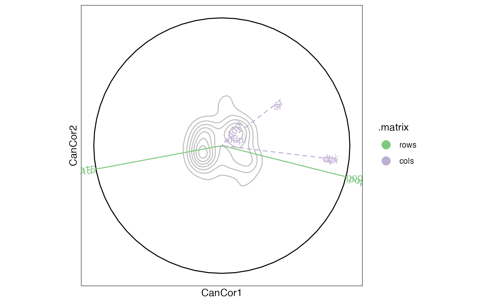
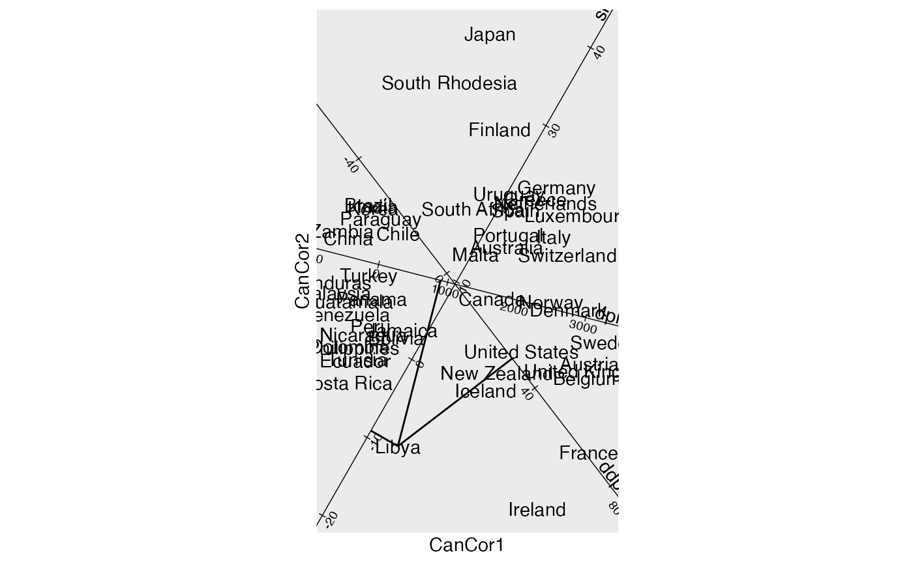

These methods extract data from, and attribute new data to,
objects of class "cancor_ord". This is a class introduced in this package
to identify objects returned by cancor_ord(), which wraps
stats::cancor().
Usage
# S3 method for class 'cancor_ord'
as_tbl_ord(x)
# S3 method for class 'cancor_ord'
recover_rows(x)
# S3 method for class 'cancor_ord'
recover_cols(x)
# S3 method for class 'cancor_ord'
recover_inertia(x)
# S3 method for class 'cancor_ord'
recover_coord(x)
# S3 method for class 'cancor_ord'
recover_conference(x)
# S3 method for class 'cancor_ord'
recover_supp_rows(x)
# S3 method for class 'cancor_ord'
recover_supp_cols(x)
# S3 method for class 'cancor_ord'
recover_aug_rows(x)
# S3 method for class 'cancor_ord'
recover_aug_cols(x)
# S3 method for class 'cancor_ord'
recover_aug_coord(x)Value
The recovery generics recover_*() return core model components, distribution of inertia,
supplementary elements, and intrinsic metadata; but they require methods for each model class to
tell them what these components are.
The generic as_tbl_ord() returns its input wrapped in the 'tbl_ord'
class. Its methods determine what model classes it is allowed to wrap. It
then provides 'tbl_ord' methods with access to the recoverers and hence to
the model components.
Details
The canonical coefficients (loadings) are obtained directly from the
underlying singular value decomposition and constitute the active elements.
If canonical scores are returned, then they and the structure correlations
are made available as supplementary elements. ordr takes rows and columns
from the intraset correlations $xstructure and $ystructure, on which no
intertia is conferred; the interset correlations can be obtained by
conferring inertia onto these.
A biplot of the canonical coefficients can be interpreted as approximating
the \(X\)-\(Y\) inner product matrix, inversely weighted by the \(X\)
and \(Y\) variances. The canonical scores and structure coefficients are
available as supplementary points if returned by cancor_ord(). These can be
used to create biplots of the case scores as linear combinations of loadings
(the coefficients, in standard coordinates, overlaid with the scores) or of
intraset and interset correlations with respect to either data set (the
correlations with inertia conferred entirely onto rows or onto columns).
Greenacre (1984) and ter Braak (1990) describe these families, though ter
Braak recommends against the first.
References
Greenacre MJ (1984) Theory and applications of correspondence analysis. London: Academic Press, ISBN 0-12-299050-1. http://www.carme-n.org/?sec=books5
ter Braak CJF (1990) "Interpreting canonical correlation analysis through biplots of structure correlations and weights". Psychometrika 55(3), 519–531. doi:10.1007/BF02294765
See also
Other methods for singular value decomposition-based techniques:
methods-correspondence,
methods-lda,
methods-lra,
methods-mca,
methods-prcomp,
methods-svd
Other models from the stats package:
methods-cmds,
methods-factanal,
methods-kmeans,
methods-lm,
methods-prcomp,
methods-princomp
Examples
# data frame of life-cycle savings across countries
class(LifeCycleSavings)
#> [1] "data.frame"
head(LifeCycleSavings)
#> sr pop15 pop75 dpi ddpi
#> Australia 11.43 29.35 2.87 2329.68 2.87
#> Austria 12.07 23.32 4.41 1507.99 3.93
#> Belgium 13.17 23.80 4.43 2108.47 3.82
#> Bolivia 5.75 41.89 1.67 189.13 0.22
#> Brazil 12.88 42.19 0.83 728.47 4.56
#> Canada 8.79 31.72 2.85 2982.88 2.43
savings_pop <- LifeCycleSavings[, c("pop15", "pop75")]
savings_oec <- LifeCycleSavings[, c("sr", "dpi", "ddpi")]
# canonical correlation analysis with scores and correlations included
savings_cca <- cancor_ord(savings_pop, savings_oec, scores = TRUE)
savings_cca <- augment_ord(as_tbl_ord(savings_cca))
head(get_cols(savings_cca))
#> CanCor1 CanCor2
#> sr 0.0084710221 3.337936e-02
#> dpi 0.0001307398 -7.588232e-05
#> ddpi 0.0041706000 -1.226790e-02
#> Australia 0.1710832312 -2.319485e-02
#> Austria 0.0734979335 4.751571e-02
#> Belgium 0.1608639281 4.001665e-02
head(get_cols(savings_cca, elements = "score"))
#> CanCor1 CanCor2
#> Australia 0.17108323 -0.02319485
#> Austria 0.07349793 0.04751571
#> Belgium 0.16086393 0.04001665
#> Bolivia -0.16793935 -0.01784978
#> Brazil -0.01892735 0.12597599
#> Canada 0.23228391 -0.15548481
get_rows(savings_cca, elements = "structure")
#> CanCor1 CanCor2
#> pop15 -0.9829821 -0.1837015
#> pop75 0.9697929 -0.2439299
get_cols(savings_cca, elements = "structure")
#> CanCor1 CanCor2
#> sr 0.4910379 0.8557760
#> dpi 0.9545172 -0.2637266
#> ddpi 0.0473377 0.1407737
# biplot of interset and intraset correlations with the population data
# NB: `contour = TRUE` is not automatically set as in `geom_density_2d()`
savings_cca %>%
confer_inertia("cols") %>%
ggbiplot(aes(label = name, color = .matrix)) +
theme_bw() + theme_scaffold() +
geom_unit_circle() +
geom_rows_density_2d(elements = "score", color = "grey", contour = TRUE) +
geom_rows_vector(arrow = NULL, elements = "structure") +
geom_cols_vector(arrow = NULL, elements = "structure", linetype = "dashed") +
geom_rows_text(elements = "structure", hjust = "outward") +
geom_cols_text(elements = "structure", hjust = "outward") +
scale_color_brewer(limits = c("rows", "cols"), type = "qual") +
expand_limits(x = c(-1, 1), y = c(-1, 1))
#> Warning: Duplicated aesthetics after name standardisation: contour
#> Warning: The following aesthetics were dropped during statistical transformation: label.
#> ℹ This can happen when ggplot fails to infer the correct grouping structure in
#> the data.
#> ℹ Did you forget to specify a `group` aesthetic or to convert a numerical
#> variable into a factor?

# situate country scores along financial variables
# (inner product interpretation requires that scores be in population units)
savings_cca %>%
confer_inertia("cols") %>%
ggbiplot(aes(label = name, center = center)) +
theme_scaffold() +
geom_cols_axis(elements = "active") +
geom_rows_text(elements = "score") +
stat_rows_projection(elements = "score", subset = 49)
#> Warning: Ignoring unknown parameters: `axis.colour`, `axis.alpha`, `label.angle`,
#> `label.colour`, `label.alpha`, `tick.linewidth`, `tick.colour`, `tick.alpha`,
#> `text.size`, `text.angle`, `text.hjust`, `text.vjust`, `text.family`,
#> `text.fontface`, `text.colour`, and `text.alpha`

# the model predicts much higher disposable income in Libya than was measured